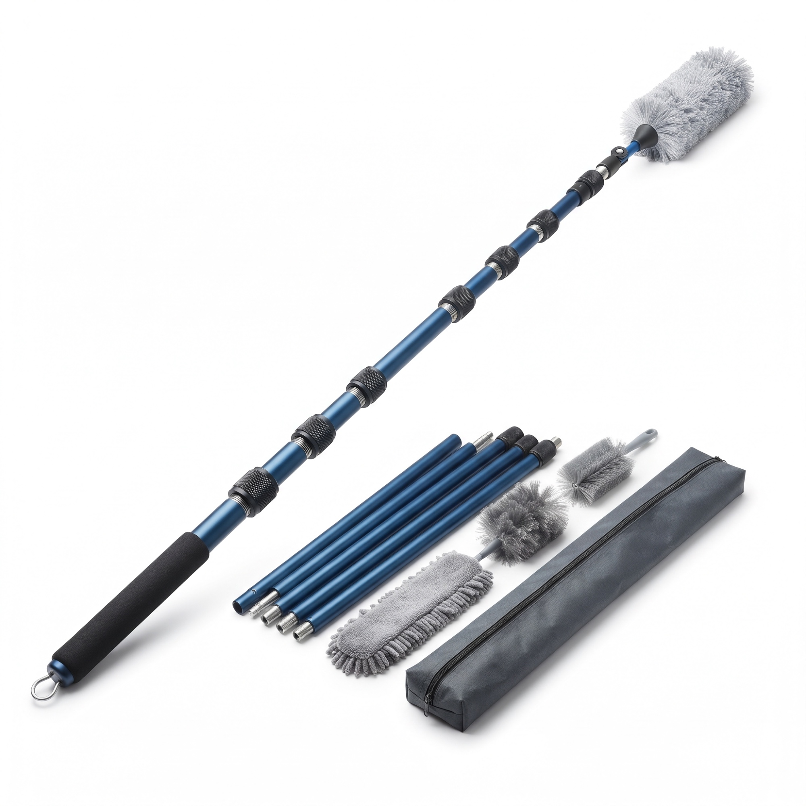

Visuels de présentation générés par IA. Ils seront remplacés par les photos réelles du produit avant l'ouverture au public.
Perche de nettoyage démontable
Un manche en aluminium anodisé qui se monte à la longueur voulue, jusqu'à {{LONGUEUR}}, avec trois têtes interchangeables et un sac de rangement.
{{PRIX}}
Prix affiché à titre indicatif. Le prix, la livraison et le paiement font foi sur la fiche Amazon.
- Aluminium anodisé, jonctions vissées en métal à bague moletée
- 3 têtes interchangeables : microfibre, plumeau, brosse
- Se démonte en tronçons courts + sac de rangement fourni
- Garantie {{GARANTIE}}
Description
Conçue pour atteindre et nettoyer les zones hautes
La perche {{NOM_DE_MARQUE}} est un manche télescopique par tronçons : vous vissez autant de sections que nécessaire pour obtenir la longueur adaptée, jusqu'à {{LONGUEUR}} une fois entièrement assemblée. Les jonctions sont en métal, avec une bague moletée qui se serre à la main — pas de clips plastique à la jonction.
Le tube est en aluminium anodisé, un traitement de surface qui protège le métal. La poignée dispose d'une mousse antidérapante et d'un anneau pour suspendre la perche une fois démontée.
Trois têtes se vissent sur l'embout : une microfibre plate pour les surfaces (dessus de meubles, plinthes, vitres), un plumeau rond pour les reliefs et les luminaires, et une petite brosse pour les angles et les détails. Les têtes se retirent pour être lavées.
Caractéristiques
Fiche technique
| Longueur maximale (assemblée) | {{LONGUEUR}} |
|---|---|
| Matériau du manche | Aluminium anodisé |
| Jonctions | Vissées en métal, bague moletée |
| Poids | {{POIDS}} |
| Têtes fournies | Microfibre plate, plumeau rond, petite brosse |
| Fixation des têtes | Embout vissé (compatible avec les 3 têtes) |
| Rangement | Démontable en tronçons + sac fourni |
| Garantie | {{GARANTIE}} |
Les cellules contenant une variable surlignée restent à compléter avec les données vérifiées du produit.
Dans la boîte
Contenu du kit
- Tronçons de perche en aluminium anodisé, à visser.
- Poignée antidérapante avec anneau de suspension.
- Tête microfibre plate.
- Tête plumeau rond.
- Petite brosse pour angles et détails.
- Sac de rangement.
Prise en main
Montage en 4 étapes
Un guide détaillé, avec le démontage et le lavage des têtes, est disponible sur la page Guide.
-
1
Choisissez la longueur
Prenez autant de tronçons que nécessaire pour atteindre la zone à nettoyer, en commençant par la poignée.
-
2
Vissez les tronçons
Alignez le filetage, puis serrez la bague moletée à la main jusqu'à ce que la jonction soit ferme. Sans forcer à l'outil.
-
3
Fixez la tête
Vissez la tête choisie (microfibre, plumeau ou brosse) sur l'embout, à l'autre extrémité de la poignée.
-
4
Nettoyez, puis démontez
Après usage, dévissez les tronçons et rangez-les dans le sac. Lavez les têtes selon le guide d'entretien.
Questions fréquentes
FAQ
Quelle est la longueur maximale ?
La perche atteint {{LONGUEUR}} une fois tous les tronçons assemblés. Vous pouvez aussi l'utiliser plus courte en montant moins de sections.
Les têtes sont-elles lavables ?
Oui. La microfibre et le plumeau se retirent pour être lavés. La méthode recommandée est décrite dans le guide d'entretien.
Peut-on l'utiliser pour les vitres ?
La tête microfibre plate convient au dépoussiérage et à l'essuyage des surfaces, y compris les vitres. Pour un lavage à l'eau, essorez bien la microfibre afin d'éviter les coulures le long du manche.
Comment se range-t-elle ?
Les tronçons se dévissent et deviennent courts : l'ensemble, têtes comprises, tient dans le sac de rangement fourni.
Y a-t-il une garantie ?
Oui, la garantie est de {{GARANTIE}}. Les conditions figurent dans les CGV. En plus de cette garantie, vous bénéficiez des garanties légales prévues par la loi.
Comment acheter ?
L'achat se fait sur Amazon via le bouton « Acheter ». Le paiement, la livraison et le service de commande sont assurés par Amazon. Ce site ne traite aucun paiement.
Commandez la perche {{NOM_DE_MARQUE}}
Achat, paiement et livraison gérés sur Amazon.
Voir la fiche Amazon — {{PRIX}}